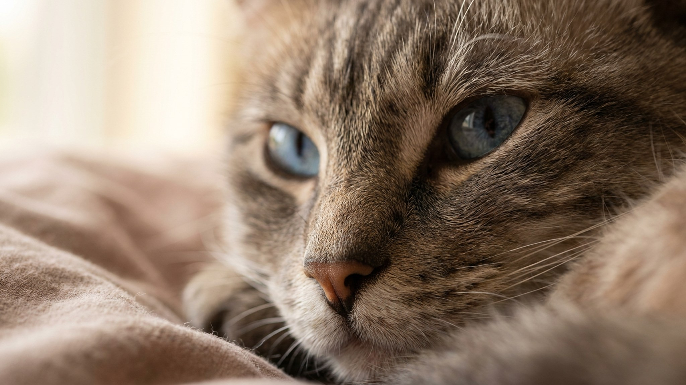

Чёрная кошка с ярко-голубыми глазами, и это не фотошоп. У охос азулес (Ojos Azules) голубой цвет глаз не связан ни с белой шерстью, ни с колор-пойнтом: ген работает независимо от окраса. Порода существует с 1984 года и до сих пор остаётся одной из самых редких в мире, и на то есть серьёзная причина. Разбираем, что это за кошка и стоит ли её искать.
🐾 Ваш питомец — охос азулес?
Заведите профиль в AnimaLife: приложение запомнит породу, возраст и вес и будет подсказывать по уходу именно для неё. Вопросы AI-ветеринару — круглосуточно и бесплатно.
Завести профиль → Завести в MAX →
У вас iPhone? AnimaLife есть в App Store
У большинства пород голубые глаза связаны с пигментацией шерсти. У белых кошек или колор-пойнтов голубой цвет глаз обусловлен тем же геном, что отвечает за осветлённый окрас. У охос азулес всё иначе: здесь работает отдельная мутация, которая влияет на радужку напрямую, не затрагивая цвет шерсти. Отсюда и название: по-испански «Ojos Azules» переводится как «голубые глаза».
Первую такую кошку нашли в Нью-Мексико в 1984 году. У черепаховой кошки по кличке Конфигурасьон оказались интенсивно-голубые глаза, каких прежде не видели у кошек с тёмным окрасом. Котята от неё унаследовали тот же признак. Генетики выделили уникальный доминантный ген и начали работу по признанию породы.
Вот где начинается сложность. Ген охос азулес доминантный, но при скрещивании двух носителей даёт нежизнеспособное потомство. Поэтому заводчики строго контролируют вязки: охос азулес всегда скрещивают с кошками без этого гена. Это автоматически ограничивает число чистопородных животных: поголовье остаётся крошечным.
Порода официально признана TICA, но зарегистрированных заводчиков единицы. Найти котёнка охос азулес даже за рубежом сложно, в России практически невозможно. Увидите объявление с «охос азулес»: требуйте документы и историю вязки.
Охос азулес описывают как уравновешенных и ласковых кошек. Они хорошо уживаются с людьми разного возраста, не избегают детей, терпимо относятся к другим животным. Нет выраженной гиперактивности или навязчивости. Кошка скорее составит компанию на диване, чем будет прыгать по шкафам в три ночи.
Интеллект средний-высокий. Несложно приучить к лотку, переноске и базовым командам. Голос у породы тихий, истерик не устраивают.
Охос азулес короткошёрстные. Это значит минимум груминга: расчёска раз в неделю, купание по необходимости, когти по мере отрастания. Никаких породоспецифических требований к питанию нет. Стандартный рацион для кошек, сбалансированный по белку и влаге.
Здоровье у породы считается крепким, хотя данных мало из-за небольшого поголовья. Плановые осмотры у ветеринара и вакцинация по графику остаются обязательными, как для любой кошки.
Никаких специфических заболеваний, характерных именно для охос азулес, официально не описано. Следите за общим состоянием: аппетит, активность, стул, состояние шерсти. Любые изменения, которые держатся дольше суток, это повод обратиться к врачу. Если заводчик передал медицинскую историю котёнка, храните её: она поможет ветеринару при первом осмотре.
Материал носит информационный характер и не заменяет очную консультацию ветеринара.
🐾 У вас охос азулес?
AnimaLife соберёт уход под породу: к каким болезням есть склонность, что проверять по возрасту, чем кормить и когда пора к врачу. Бесплатно, прямо в мессенджере.
Собрать план ухода → Собрать в MAX →
У вас iPhone? AnimaLife есть в App Store
🐾 Понравился разбор?
Подпишитесь на канал — каждый день разбираем по одному тревожному симптому у кошек и собак: что в пределах нормы, а когда пора к врачу. Подпишитесь, чтобы не пропустить разбор, который может спасти здоровье вашего питомца.